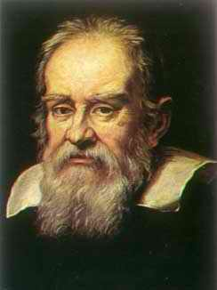
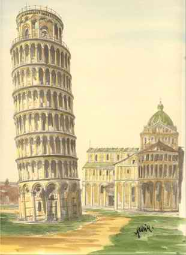

13 GALILEO GALILEI 1564-1642
Ilmuwan
Itali besar ini mungkin lebih bertanggung jawab terhadap
perkembangan metode ilmiah dari siapa pun juga. Galileo
lahir di Pisa, tahun 1564. Selagi muda belajar di
Universitas Pisa tetapi mandek karena urusan keuangan. Meski
begitu tahun 1589 dia mampu dapat posisi pengajar di
universitas itu. Beberapa tahun kemudian dia bergabung
dengan Universitas Padua dan menetap di sana hingga tahun
1610. Dalam masa inilah dia menciptakan tumpukan
penemuan-penemuan ilmiah.
Sumbangan penting pertamanya di bidang mekanika.
Aristoteles mengajarkan, benda yang lebih berat jatuh lebih
cepat ketimbang benda yang lebih enteng, dan
bergenerasi-generasi kaum cerdik pandai menelan pendapat
filosof Yunani yang besar pengaruh ini. Tetapi, Galileo
memutuskan mencoba dulu benar-tidaknya, dan lewat serentetan
eksperimen dia berkesimpulan bahwa Aristoteles keliru. Yang
benar adalah, baik benda berat maupun enteng jatuh pada
kecepatan yang sama kecuali sampai batas mereka berkurang
kecepatannya akibat pergeseran udara. (Kebetulan, kebiasaan
Galileo melakukan percobaan melempar benda dari menara Pisa
tampaknya tanpa sadar).
Mengetahui hal ini, Galileo mengambil langkah-langkah
lebih lanjut. Dengan hati-hati dia mengukur jarak jatuhnya
benda pada saat yang ditentukan dan mendapat bukti bahwa
jarak yang dilalui oleh benda yang jatuh adalah berbanding
seimbang dengan jumlah detik kwadrat jatuhnya benda.
Penemuan ini (yang berarti penyeragaman percepatan) memiliki
arti penting tersendiri. Bahkan lebih penting lagi Galileo
berkemampuan menghimpun hasil penemuannya dengan formula
matematik. Penggunaan yang luas formula matematik dan metode
matematik merupakan sifat penting dari ilmu pengetahuan
modern.
Sumbangan besar Galileo lainnya ialah penemuannya
mengenai hukum kelembaman. Sebelumnya, orang percaya bahwa
benda bergerak dengan sendirinya cenderung menjadi makin
pelan dan sepenuhnya berhenti kalau saja tidak ada tenaga
yang menambah kekuatan agar terus bergerak. Tetapi
percobaan-percobaan Galileo membuktikan bahwa anggapan itu
keliru. Bilamana kekuatan melambat seperti misalnya
pergeseran, dapat dihilangkan, benda bergerak cenderung
tetap bergerak tanpa batas. Ini merupakan prinsip penting
yang telah berulang kali ditegaskan oleh Newton dan
digabungkan dengan sistemnya sendiri sebagai hukum gerak
pertama salah satu prinsip vital dalam ilmu pengetahuan.

Menara miring Pisa yang dianggap digunakan oleh Galileo
mendemonstrasikan hukum-hukum mengenai jatuhnya sesuatu
benda
Penemuan Galileo yang paling masyhur adalah di bidang
astronomi. Teori perbintangan di awal tahun 1600-an berada
dalam situasi yang tak menentu. Terjadi selisih pendapat
antara penganut teori Copernicus yang matahari-sentris dan
penganut teori yang lebih lama, yang bumi-sentris. Sekitar
tahun 1609 Galileo menyatakan kepercayaannya bahwa
Copernicus berada di pihak yang benar, tetapi waktu itu dia
tidak tahu cara membuktikannya. Di tahun 1609, Galileo
dengar kabar bahwa teleskop diketemukan orang di Negeri
Belanda. Meskipun Galileo hanya mendengar samar-samar saja
mengenai peralatan itu, tetapi berkat kegeniusannya dia
mampu menciptakan sendiri teleskop. Dengan alat baru ini dia
mengalihkan perhatiannya ke langit dan hanya dalam setahun
dia sudah berhasil membikin serentetan penemuan besar.
Dilihatnya bulan itu tidaklah rata melainkan
benjol-benjol, penuh kawah dan gunung-gunung. Benda-benda
langit, kesimpulannya, tidaklah rata serta licin melainkan
tak beraturan seperti halnya wajah bumi. Ditatapnya Bima
Sakti dan tampak olehnya bahwa dia itu bukanlah semacam
kabut samasekali melainkan terdiri dari sejumlah besar
bintang-bintang yang dengan mata telanjang memang seperti
teraduk dan membaur satu sama lain.
Kemudian diincarnya planit-planit dan tampaklah olehnya
Saturnus bagaikan dilingkari gelang. Teleskopnya melirik
Yupiter dan tahulah dia ada empat buah bulan berputar-putar
mengelilingi planit itu. Di sini terang-benderanglah baginya
bahwa benda-benda angkasa dapat berputar mengitari sebuah
planit selain bumi. Keasyikannya menjadi-jadi: ditatapnya
sang surya dan tampak olehnya ada bintik-bintik dalam
wajahnya. Memang ada orang lain sebelumnya yang juga melihat
bintik-bintik ini, tetapi Galileo menerbitkan hasil
penemuannya dengan cara yang lebih efektif dan menempatkan
masalah bintik-bintik matahari itu menjadi perhatian dunia
ilmu pengetahuan. Selanjutnya, penelitiannya beralih ke
planit Venus yang memiliki jangka serupa benar dengan jangka
bulan. Ini merupakan bagian dari bukti penting yang
mengukuhkan teori Copernicus bahwa bumi dan semua planit
lainnya berputar mengelilingi matahari.
Ilustrasi dari hukum daya pengungkit Galileo dipetik
dari buku Galileo 'Perbincangan Matematik dan
Peragaan'
Penemuan teleskop dan serentetan penemuan ini melempar
Galileo ke atas tangga kemasyhuran. Sementara itu,
dukungannya terhadap teori Copernicus menyebabkan dia
berhadapan dengan kalangan gereja yang menentangnya
habis-habisan. Pertentangan gereja ini mencapai puncaknya di
tahun 1616: dia diperintahkan menahan diri dari menyebarkan
hipotesa Copernicus. Galileo merasa tergencet dengan
pembatasan ini selama bertahun-tahun. Baru sesudah Paus
meninggal tahun 1623, dia digantikan oleh orang yang
mengagumi Galileo. Tahun berikutnya, Paus baru ini --Urban
VIII-- memberi pertanda walau samar-samar bahwa larangan
buat Galileo tidak lagi dipaksakan.
Enam tahun berikutnya Galileo menghabiskan waktu menyusun
karya ilmiahnya yang penting Dialog Tentang Dua Sistem
Penting Dunia. Buku ini merupakan peragaan hebat hal-hal
yang menyangkut dukungan terhadap teori Copernicus dan buku
ini diterbitkan tahun 1632 dengan ijin sensor khusus dari
gereja. Meskipun begitu, penguasa-penguasa gereja menanggapi
dengan sikap berang tatkala buku terbit dan Galileo langsung
diseret ke muka Pengadilan Agama di Roma dengan tuduhan
melanggar larangan tahun 1616.
Tetapi jelas, banyak pembesar-pembesar gereja tidak
senang dengan keputusan menghukum seorang sarjana kenamaan.
Bahkan dibawah hukum gereja saat itu, kasus Galileo
dipertanyakan dan dia cuma dijatuhi hukuman enteng. Galileo
tidak dijebloskan ke dalam bui tetapi sekedar kena tahanan
rumah di rumahnya sendiri yang cukup enak di sebuah villa di
Arcetri. Teorinya dia tidak boleh terima tamu, tetapi
nyatanya aturan itu tidak dilaksanakan sebagaimana mestinya.
Hukuman lain terhadapnya hanyalah suatu permintaarn agar dia
secara terbuka mencabut kembali pendapatnya bahwa bumi
berputar mengelilingi matahari. Ilmuwan berumur 69 tahun ini
melaksanakannya di depan pengadilan terbuka. (Ada ceritera
masyhur yang tidak tentu benarnya bahwa sehabis Galileo
menarik lagi pendapatnya dia menunduk ke bumi dan berbisik
pelan, "Tengok, dia masih terus bergerak!"). Di kota Arcetri
dia meneruskan kerja tulisnya di bidang mekanika. Galileo
meninggal tahun 1642.
Sumbangan besar Galileo terhadap kemajuan ilmu
pengetahuan sudah lama dikenal. Arti penting peranannya
terletak pada penemuan-penemuan ilmiah seperti hukum
kelembaman, penemuan teleskopnya, pengamatan bidang
astronominya dan kegeniusannya membuktikan hipotesa
Copernicus. Dan yang lebih penting adalah peranannya dalam
hal pengembangan metodologi ilmu pengetahuan. Umumnya para
filosof alam mendasarkan pendapatnya pada pikiran-pikiran
Aristoteles serta membuat penyelidikan secara kualitatif dan
fenomena yang terkategori. Sebaliknya, Galileo menetapkan
fenomena dan melakukan pengamatan atas dasar kuantitatif.
Penekanan yang cermat terhadap perhitungan secara
kuantitatif sejak itu menjadi dasar penyelidikan ilmu
pengetahuan di masa-masa berikutnya.
Galileo mungkin lebih punya tanggung jawab daripada orang
mana pun untuk penyelidikan ilmiah dengan sikap empiris.
Dialah, dan bukannya yang lain, yang pertama kali menekankan
arti penting peragaan percobaan-percobaan, dia menolak
pendapat bahwa masalah-masalah ilmiah dapat diputuskan
bersama dengan kekuasaan, apakah kekuasaan itu namanya
Gereja atau kaidah dalil Aristoteles. Dia juga menolak keras
bersandar pada skema-skema yang menggunakan alasan ruwet dan
bukannya bersandar pada dasar percobaan yang mantap. Cerdik
cendikiawan abad tengah memperbincangkan bertele-tele apa
yang harus terjadi dan mengapa sesuatu hal terjadi, tetapi
Galileo bersikeras pada arti penting melakukan percobaan
untuk memastikan apa sesungguhnya yang terjadi. Pandangan
ilmiahnya jelas gamblang tidak berbau mistik, dan dalam
hubungan ini dia bahkan lebih modern ketimbang para
penerusnya, seperti misalnya Newton.
Galileo, dapat dianggap orang yang taat beragama. Lepas
dari hukuman yang dijatuhkan terhadap dirinya dan
pengakuannya, dia tidak menolak baik agama maupun gereja.
Yang ditolaknya hanyalah percobaan pembesar-pembesar gereja
untuk menekan usaha penyelidikan ilmu pengetahuannya.
Generasi berikutnya amat beralasan mengagumi Gahleo sebagai
lambang pemberontak terhadap dogma dan terhadap kekuasaan
otoriter yang mencoba membelenggu kemerdekaan berfikir. Arti
pentingnya yang lebih menonjol lagi adalah peranan yang
dimainkannya dalam hal meletakkan dasar-dasar metode ilmu
pengetahuan modern.
Situs web
- http://www-groups.dcs.st-and.ac.uk/~history/Mathematicians/Galileo.html
- http://galileo.rice.edu/
- http://www.hao.ucar.edu/public/education/sp/images/galileo.html
- http://www.bbc.co.uk/history/historic_figures/galilei_galileo.shtml
|